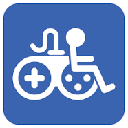

Links

Accessible Gaming
Accessibility gaming featurs can help a range of differently-abled players, including players with a disability, or simply those unfamiliar with gaming, or a particular game. The effect is that players have greater choice when looking for games that suit them. The topic of accessibility has become more prominent within the games community recently, and more developers are keeping it front of mind when creating games. Developments such as dedicated controllers have helped drive accessibility in gaming forward, with some features now commonplace. Broadly, these options include being able to remap controls, adjust sensitivity and difficulty settings, and enable subtitles or text narration options. Microsoft have developed an adaptave controller where numerous switches/ joysticks and touch pads can be added to aid control of the game.
Theo and Gaming
I have created this page, to raise awareness about accessible gaming. The concept was to create a fun and simple game where the user can pick their favorite car, or check the stats and find the ultimate vehicle! Limited user imput is required only a press upon which card is their preference! At the end of the game the results can be displayed in a table and also a graph showing Views and Clicks. My son has quadriplegic cerebral palsy, he has a very limited range of movent and minimal fine motor skills. However he is excellent at targeting objects on an tablet, hence the simple user imput of this game. Theo loves race/ sports cars so it was an easy choice when picking a topic to create a game. I hope he and many other will enjoy this game.